Brand & Style Guide
Sovereign AI infrastructure for regulated organizations — every workstation its own air-gappable server, with the Woven Security & Governance Fabric built in. Hand-built in California.
This page renders the canonical BRAND.md, in the brand's own visual language.
01 — Voice
We describe what the product does and constrains, not what it "empowers." Confident without hype; regulated-industry literate; the through-line is always custody — what stays inside the customer's boundary.
02 — Color
A warm copper/amber accent over dark grounds, slate neutrals chosen with a cool bias, and a single red reserved for alerts. Every value below is a live swatch of the real token.
--copper (style.css) and --au-copper (aurora.css). The hex values are canonical; the two families are aliases. Use --au-* in aurora sections, --* in the component library — but never introduce a third value for an existing color.03 — Typography
Display in Space Grotesk at 700–800 with tight tracking; body in Inter at a ~65-character measure. Uppercase copper eyebrows are the kicker above every heading.
| Role | Family | Size | Weight |
|---|---|---|---|
| Hero H1 | Space Grotesk | clamp(2.6, 6vw, 4.5rem) | 700 |
| Section H2 | Space Grotesk | clamp(1.85, 3.6vw, 2.7rem) | 800 |
| H3 | Space Grotesk | 1.14–1.5rem | 600–700 |
| Body | Inter | 0.95–1.05rem / 1.7 | 400 |
| Eyebrow | Space Grotesk | 0.75rem · .24em | 700 |
04 — Iconography
A library of ~33 icons: white linework on transparent, stored at 1254×1254 webp with luminance-based alpha, frequently carrying the sunburst. Centered over the text, never in a badge.

agentic-orch.au-ic 54px · .card-icon-im ≤210px centered · .au-vcard-icon 72px. All object-fit:contain, alt="" (the heading labels it), loading="lazy". To make a new one, see How-To A1 / A6 below.05 — Cards & Motion
Dark glass, hairline border, rounded, hover-lift — unified across families (.card, .au-card, gpu-card, risk-card) by one animation: a hollow white ring rides the top then the right edge, once, on scroll-in, staggered across a row. It's running live below.
Straight answers on deployment, model selection, and air-gapping.
Direct-answer briefs on HIPAA, ITAR/CMMC, and the CLOUD Act.
One builder, one phone call, real answers — no sales pitch.
.btn-primary — copper gradient, glow, primary CTA only. .btn-secondary — glass outline, card CTAs. Inline links use class="clr-copper" on marketing pages, plain <a> in blog prose.
06 — Surfaces & Tokens
Consistent radii, one glass blur, restrained shadows, a fixed nav and container width.
auEdgeNode 2.8s linear, once, staggered by --i · reveal auRise .72s cubic-bezier(.22,.61,.36,1) on scroll · everything disabled under prefers-reduced-motion.07 — Process How-To's
The repeatable methods behind the brand — copy-pasteable. Full detail lives in BRAND.md; the essentials are here.
Solid-bg PNG → transparent via luminance-keyed alpha (keeps white linework crisp), then lossless webp.
# black bg → transparent, force pure-white RGB
convert in.png \( +clone -colorspace Gray \) -alpha off \
-compose CopyOpacity -composite \
-channel RGB -fill white -colorize 100 +channel PNG32:t.png
cwebp -quiet -lossless -alpha_q 100 t.png -o images/name-icon.webpH.264, web-safe pixel format, faststart, no audio — plus a webp poster from the last frame.
ffmpeg -y -framerate 24 -i frames/f_%04d.png \
-c:v libx264 -pix_fmt yuv420p -crf 20 -preset slow \
-movflags +faststart -an video/name.mp4
ffmpeg -y -sseof -0.3 -i video/name.mp4 -vframes 1 \
-c:v libwebp -quality 82 images/name-poster.webpPreferred: full-frame masked inpaint — locate the static glyph via the temporal-minimum across frames, then per-frame cv2.INPAINT_TELEA. Corner-crop only when nothing important lives in the corner. To brand a clip, see VIDEO_BRANDING_WORKFLOW.md.
Soften flat-white embedded graphics so the dark ground shows through; full opacity on hover.
.woven-split-media img{ opacity:.78; transition:opacity .3s }
.woven-split-media img:hover{ opacity:1 }tools/gif_process.pyFloat a light-bg GIF onto the dark theme (luminance→alpha), recolor (white·copper·gray·keep·fire), protect a central emblem via --radial/--accent, export 8-bit-alpha WebP (preferred) or 1-bit GIF.
python tools/gif_process.py in.gif images/name.webp \
--color white --scale 0.5 # --format gif for 1-bitUse .card (component lib) or .au-card (aurora, centered). Add the house motion with beam-card + a staggered --i.
<div class="card beam-card" style="--i:0">
<div class="card-icon-im"><img src="images/faq-icon.webp" alt=""></div>
<h3>FAQ</h3> <p>…</p>
</div>
# page MUST load: css/card-nodes.css + js/card-nodes.jsPages load style.min.css and there is no build step. Every change goes in both style.css and style.min.css, then bump the cache key everywhere.
grep -rl 'style.min.css?v=2' --include=*.html . \
| xargs sed -i 's#style.min.css?v=2#style.min.css?v=3#g'Push to main → the serialized pages.yml workflow. Watch the run to green; don't push and hope. Note: this session's egress blocks fetching islandmountain.io — verify via the GitHub API/tree instead.
After editing HTML: no NUL/truncation, terminator present, balanced sections. Two traps: grep -c $'\\x00' collapses to an empty match; grep -c exits non-zero on zero hits.
LC_ALL=C grep -qP '\x00' f.html && echo "NUL FOUND" # correct form
tail -c 20 f.html | grep -o '</html>'
grep -oE '<section' f.html | wc -l # vs </section>Drive the preinstalled Chromium — absolute import, 390px mobile / 1000px+ desktop, screenshot el.closest('section'), and measure computed styles rather than eyeballing.
import pkg from '/opt/node22/lib/node_modules/playwright/index.js'
const {chromium}=pkg
chromium.launch({executablePath:'/opt/pw-browsers/chromium'})